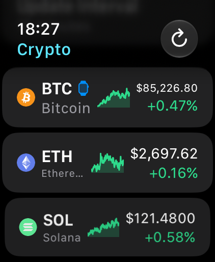
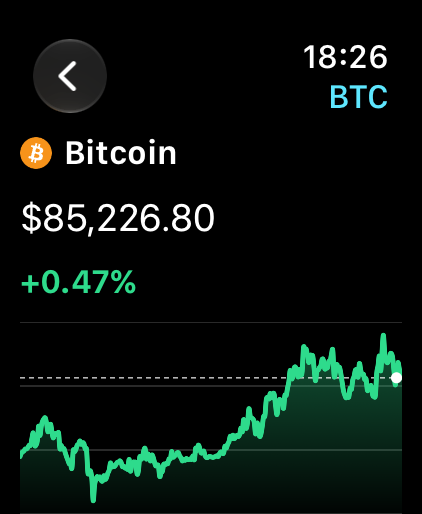
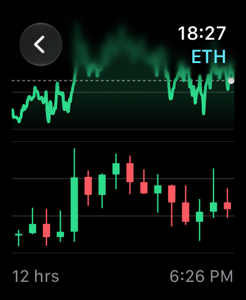

Kurse auf der Uhr
CryptoLiveChart zeigt Bitcoin, Ethereum und weitere Kryptowährungen auf der Apple Watch. Die Liste bringt Preis, Veränderung und eine Mini-Kurve. Ein Tipp öffnet den Linienchart und den Kerzenchart.
Als Komplikation bleibt der Lieblingscoin auf dem Zifferblatt: Chart, Linie, Kerzen oder nur der Kurs. Rechteckige, runde, Eck- und Inline-Komplikationen werden unterstützt.
- 12 Coins: Bitcoin, Ethereum, Solana, XRP, Cardano, Dogecoin, BNB, Avalanche, Vision, Tether, TRON und Zcash
- 18 Währungen, darunter EUR, USD, CHF, GBP und JPY
- Zeiträume von 4, 12 oder 24 Stunden
- Aktualisierung von 5 Minuten bis 2 Stunden
- Läuft eigenständig auf der Apple Watch, ohne iPhone
- Deutsch und Englisch, kein Konto, kein Tracking
Die Kurse stammen von den öffentlichen Schnittstellen von OKX und CoinGecko und können verzögert sein. CryptoLiveChart ist keine Anlageberatung und bietet keinen Handel an.
Prices on your wrist
CryptoLiveChart puts Bitcoin, Ethereum and other cryptocurrencies on your Apple Watch. The list shows the price, the change and a mini chart. Tap a coin for the line chart and the candlestick chart.
A complication keeps your favorite coin on the watch face: Chart, Line, Candles or Quote. Rectangular, circular, corner and inline complications are supported.
- 12 coins: Bitcoin, Ethereum, Solana, XRP, Cardano, Dogecoin, BNB, Avalanche, Vision, Tether, TRON and Zcash
- 18 currencies, including USD, EUR, GBP, CHF and JPY
- Time windows of 4, 12 or 24 hours
- Refresh from 5 minutes to 2 hours
- Runs on Apple Watch by itself, no iPhone required
- English and German, no account, no tracking
Prices come from the public APIs of OKX and CoinGecko and may be delayed. CryptoLiveChart is not investment advice and does not offer trading.